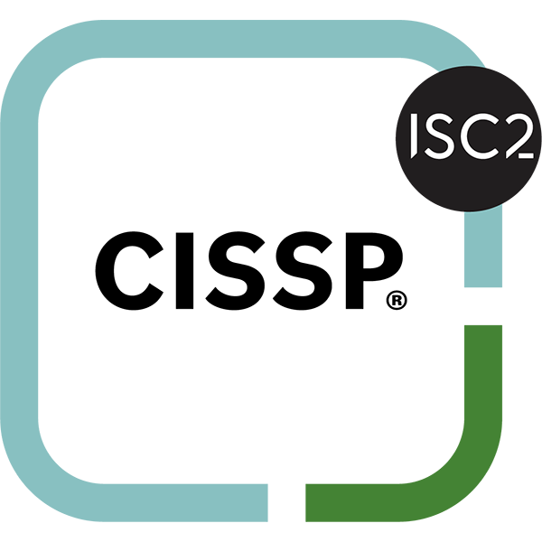
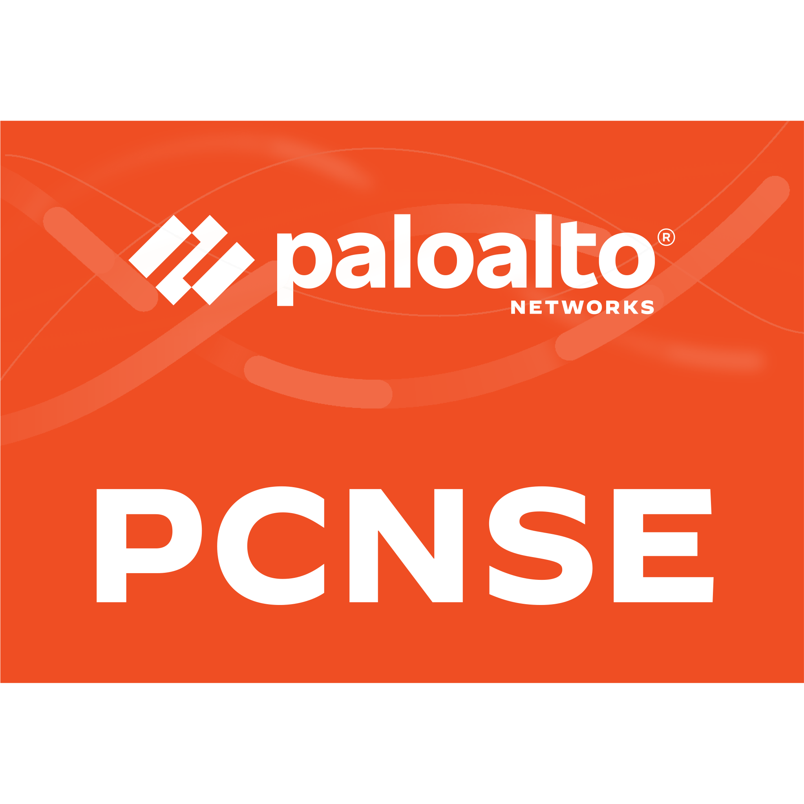
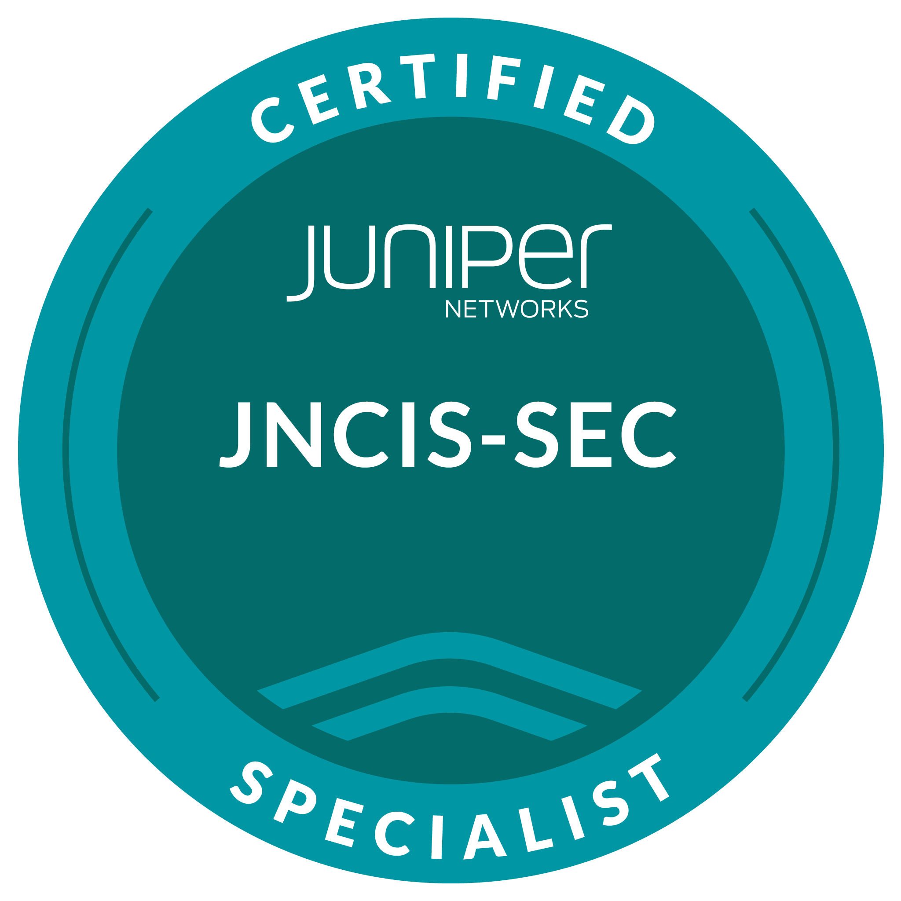
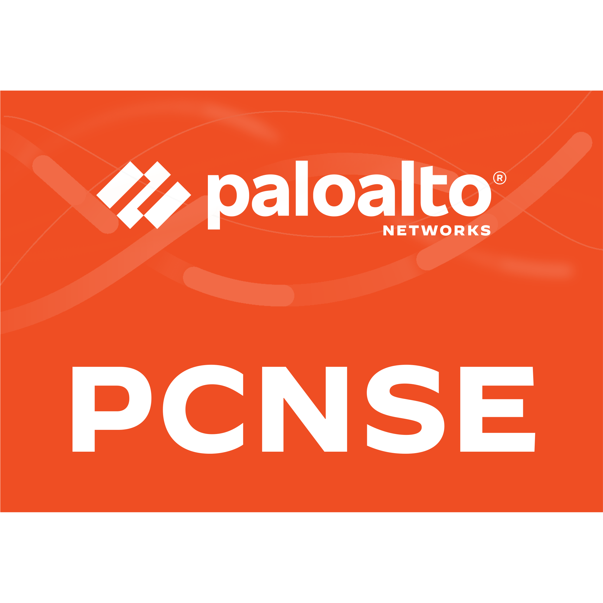
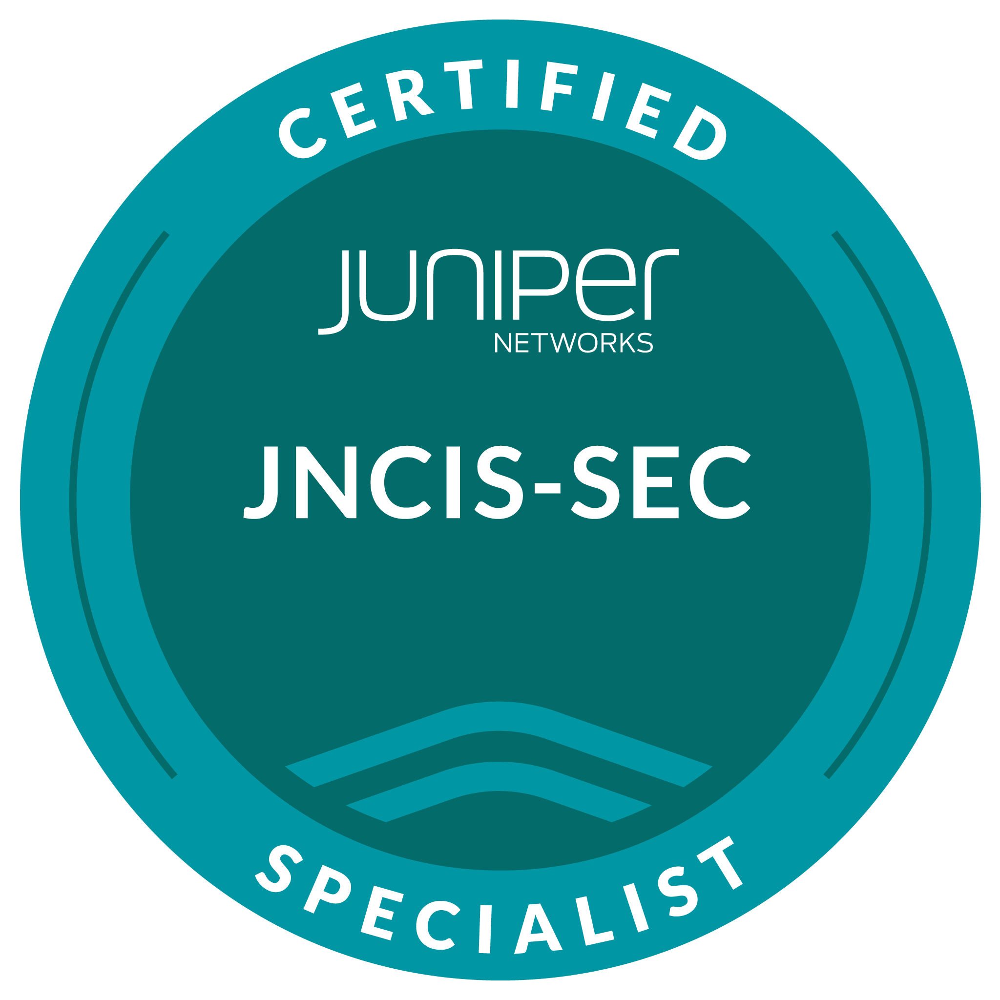

Kiran Bhat
CISSP | CCIE R&S | PCNSE | JNCIS-SEC
Network Manager/Architect
Mobile: +91 9880404045
Email: kirantbhat@outlook.com
Linkedin: My Linkedin Profile
Download My CV


 



ABOUT ME
I'm a network engineer with a strong passion for network automation. I specialize in building efficient, scalable, and resilient network infrastructures while leveraging automation to simplify complex tasks, reduce errors, and accelerate deployments. Whether it's scripting with Python, automating with Ansible, I enjoy turning repetitive tasks into reliable, repeatable workflows. I'm driven by a desire to continuously improve network operations and stay at the forefront of the evolving networking landscape.
EXPERIENCE
Network Manager - July 2018 - till date
Company: Fidelity Information Services India Pvt Ltd
Location: Bangalore, Karnataka
Job Description:
- Leading and managing Network Engineering team.
- Develop and implement Standards, Procedures and Processes for Network engineering team.
- Acting as agile product owner, identify workflow inefficiencies, optimize, implement corrective measures.
- Project, Task assignment to team members and address roadblocks and challenges.
- Define measurable and achievable KPI's aligned with the company's objectives.
- Employee hiring, performance review & identify areas of improvement and provide constructive feedback.
- Ensure that team has the necessary tools, training, and technology.
- Recognize and reward high performance to maintain motivation.
- Working on Projects related to FIS Backbone network, corporate connectivity, FIS to Client connectivity, B2B connectivity including various banks, stock exchanges, third party card transaction services and Cloud connectivity which may be direct or using third party-fabric providers i.e. Equinix, Megaport.
- Working on Proof of Concepts for new deployments and Network automation initiatives.
- Building Backbone MPLS connectivity or making the necessary changes to the existing environment, which involves planning, Designing, creating HLD.
- Getting the Quotes for Routers or Switches required for any new connectivity and ordering them.
- Getting the Quotes for required WAN circuits, ordering it and getting them installed.
- Responsible for updating the inventory and monitoring tools whenever a network device has been installed or decommissioned.
- NOC handover upon completion of a project with all the required documentation and Knowledge Transfer.
- Working on escalated incidents to provide level 3 support & RCA.
- Working on Problem tickets, investigate, propose a solution and implement.
- Day-to-day work involves working on Juniper MX Routers, EX and QFX switches, SRX, Palo Alto firewalls, Cisco ASR, ISR, Catalyst 8300, 8500 Series Routers, Nexus switches and Load balancers.
- Tools used: SNOW for Change, Incident, Problem management and Configuration management. CAPC, CANFA, HPNA, Qradar, Splunk, Infoblox, Wiki, Confluence.
Engineer Customer Support - August 2016 - July 2018
Company: Cisco Systems India Pvt Ltd
Project: HSBC
Location: Bangalore, Karnataka
Job Description:
- Working with BU’s and various stakeholders to gather project requirements.
- Design, review with Architecture to finalize the network design and implement.
- Working on Change requests for MACD operations and working on escalated incidents.
- Perform Software upgrades and EOS Hardware replacements, circuit upgrades, replacements, keeping the inventory, diagrams and design documents up to date.
- Routers & Switches worked: Cisco 1841, 1921, 2801, 2821, 2901, 2921, 2951, 3825, 3845, 3945 WAN routers, 4500, 6500 Series, 3750, 3560, 3650, 3850 Series and Nexus switches.
- Routing Protocols & technologies worked: LAN, WAN, VPN, Wireless, BGP, EIGRP, OSPF, MPLS VPN, GRE, NHRP, DMVPN, IPSEC, HSRP, VRRP, VSS, QoS, SNMP, DHCP, VLANS, STP.
Associate Network Architect - January 2016 - July 2016
Company: Synophic Systems Pvt Ltd
Client: Cisco Systems India Pvt Ltd
Project: Reliance Jio 4G
Location: Bangalore, Karnataka
Job Description:
- Configuration and performance management for Reliance Jio Network.
- Configuring ASR 900 and Juniper MX Series routers including L2 & L3 MPLS VPN's.
- Troubleshooting issues related to KPI's i.e. packet loss, latency, jitter, CPU and memory utilization of network devices to improve the network performance.
- Perform KPI trend analysis and preventative maintenance.
- Configuring and troubleshooting issues related to ASR 903, 920, 1K, 9K routers.
Senior Network Consultant - June 2014 - December 2015
Company: Capgemini India Pvt Ltd
Client: Monsanto Holdings Pvt Ltd
Location: Bangalore, Karnataka
Job Description:
- Working on new projects and Change requests for MACD operations, Working on escalated incidents.
- Understanding BU's LAN and WAN network requirement for any new project.
- Perform the site survey to verify the availability of existing network and infrastructure resources if it can be determined remotely, if not engage the third-party vendor to perform the site survey.
- Review the survey report from the vendor and suggest the remediation based on new requirement.
- Prepare the list of Network equipments required as per the company's engineering standard, prepare the bill of material.
- Once the bill of material is approved by the business, get the quotation from the vendor, review the quotation and send it to purchase team for equipment ordering.
- If a new WAN circuit is required for the project order the new circuit.
- Once the new equipment's are delivered to the site, configure the equipment's and complete the Implementation, which involves below mentioned tasks based on the project.
- Testing and turning up of new WAN circuit.
- Configuring and troubleshooting 1841, 1921, 2801, 2821, 2901, 2921, 2951, 3825, 3845, 3945 WAN routers.
- Configuring and troubleshooting 4500X, 4510R, 4507R-E, 4510R+E, 4506, 3750, 3560, 3650 switches.
- Configuring and troubleshooting routing protocols like BGP, EIGRP, OSPF, Performance Routing (PFR).
- Configuring and troubleshooting MPLS VPN, GRE, NHRP, DMVPN, IPSEC. •Configuring and troubleshooting High availability features i.e. HSRP, VRRP, VSS.
- Configuring 5500 and 4400 Series WLC's, 294, 594, 7541 series WAAS, LWAP's.
- Configuring and troubleshooting other features i.e. QoS, Route redistribution, SNMP, DHCP, VLANS.
- Update all the tools including the network monitoring tool solarwinds, update the new asset details in remedy, and update other tools like Cisco prime, BMC, ISE, Live Action, update the HLD and handover the devices to operations.
DTAC Engineer - August 2011 - June 2014
Company: AT&T Communication Services India Pvt Ltd
Project: MIS & BVOIP
Location: Bangalore, Karnataka
Job Description:
- Understanding customer's LAN and WAN network requirements and design, guide them during the new implementation.
- Testing & Turning up of T1, T3, Metro Ethernet circuits or high speed WAN links.
- Configuring the AT&T managed customer routers like 1841, 1921, 2801, 2821, 2901, 2921, 3825, 3845, 3925, 3945 and Edgewater routers, according to customer requirement.
- Configuring and troubleshooting routing protocols like BGP, EIGRP, OSPF, RIP, L2 & L3 MPLS VPN's.
- Configuring and troubleshooting High availability features i.e. HSRP, VRRP.
- Configuring and troubleshooting other features i.e. QoS, Route Redistribution, SNMP, DHCP, VLANS, NAT, VRF's.
- Configuring and troubleshooting SIP trunks on AT&T IP Flex Service.
- Configuring and troubleshooting T1 PRI and CAS on AT&T managed routers.
Network Engineer - March 2009 - August 2011
Company: Nokia Siemens Networks Pvt Ltd
Project: Flexi Platform
Location: Bangalore, Karnataka
Job Description:
- Planning, Implementing & Maintaining R&D Lab network infrastructure which has more than 200 Servers.
- Configuration & maintenance of Cisco 7600 series routers, Cisco 3750, 4948, Juniper EX4200 series switches.
- Providing required network environment using L2 protocols like VLAN, STP, RSTP, and MSTP for telecom testing.
- Providing required network environment using L3 protocols like OSPF, BGP, VRRP, and GLBP for telecom testing.
- Configuration & maintenance of Linux based NIS Authentication Server, NFS, FTP, and DNS Servers.
- Taking backups of routers, switches, NIS, NFS, FTP, DNS servers on a regular basis.
- Installation of HP Proliant, HP Blade center, IBM Blade center, Sun Servers, Telecom hardware i.e. ATCA, BCN, Octeons, Ixia.
Technical Officer - June 2008 - March 2009
Company: Wire & Wireless India Pvt Ltd
Location: Bangalore, Karnataka
Job Description:
- Implementing & maintaining LAN & WAN.
- Configuration & maintenance of Cisco 2900, 3500, 2948G series switches.
- Configuration & maintenance of Cisco 7200, 7200UBR, 3600 series routers.
- BGP Configuration and troubleshooting.
- Configuration & maintenance of NAS (Network Access Server), CNR (Cisco Network Registrar).
- Taking backups of routers, switches, CNR, NAS on a regular basis.
- Coordinating with the upstream provider and maintaining maximum uptime.
- Configuring and Monitoring of NMS Tools.
- Allocating IP Address to the customers, Manage the activation, deactivation and cancellation of customer accounts.
TECHNICAL SKILLS
- Network Architecture, Network Design, HLD, LLD, Network Implementation & Network Operations.
- Extensive knowledge and Experience of Enterprise and Service Provider Networks and Technologies.
- Extensive knowledge on implementing diverse high speed wavelength circuits.
- Platform knowledge: Juniper, Cisco, routers and switches, Juniper, Cisco, Palo alto, Fortinet Firewalls.
- Knowledge of Cisco IOS, XE, XR, NXOS, Junos, PAN-OS, FortiOS, Software upgrades.
- Network protocol knowledge: LAN, WAN, VLAN, STP, PVST, RSTP, MSTP, VTP, HSRP, VRRP, GLBP, VSS, OSPF, EIGRP, ISIS, BGP, MPBGP, GRE, IPSEC, MPLS VPN, NHRP, DMVPN, L2VPN, VPLS, VPWS, QoS, VPC, VxLAN, EVPN, Inter-AS VPN, CSC, LDP, RSVP, FRR, MPLS TE, Cisco ACI, SNMP, ACL, NAT, PAT, NAT44, NAT64, NTP, PTP, NSR, BFD, Cisco ISE, AAA, TACACS+, IP SLA, SPAN, RSPAN, ERSPAN, Multicast Routing, IGMP, MLD, PIM, PIM-DM, PIM-SM, SSM, BIDIR, MSDP, MBGP.
- Python scripting and Ansible Network Automation.
- SDWAN, SDN, PaloAlto Panorama, Global Protect VPN, Load Balancer, Enterprise DDoS mitigation using F5 Silverline,SASE.
- Cloud connectivity and Networking for AWS, Azure, GCP, IaaS, PaaS, SaaS, using direct or third-party fabric providers like Equinix, Megaport.
EDUCATION
B.Tech in Electronics and Telecommunication Engineering
From Janardan Rai Nagar Rajasthan Vidyapeeth University
Diploma in Electronics and Communication Engineering
From Department of Technical Education, Government of Karnataka
CERTIFICATIONS
CISSP - Certified Information Systems Security Professional
CCIE - Enterprise Infrastructure CCIE# 56306
PCNSE - Palo Alto Networks Certified Network Security Engineer
JNCIS - SEC Juniper Networks Certified Internet Specialist - Security
PERSONAL DETAILS
Address: No C1321, Brigade Buena Vista, Bommenahalli, Near Budigere Cross, Bangalore, Karnataka - 560049
Languages known: English, Kannada, Hindi
Hobbies & Interests: Listening to Music, Reading Novels, Playing Badminton, Bolleyball, and Chess, Cycling, Trekking, Travelling.
DECLARATION
I hereby declare that the above mentioned information is correct up to my knowledge and I bear the responsibility for the correctness of the above mentioned particulars.
Yours Sincerely,
Kiran Bhat